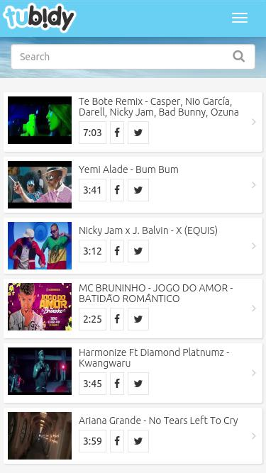

<div class="posts">
  {% for post in site.posts %}
    <article class="post">

      <div class="entry">
        <p>Ücretsiz video ve müzik indirme uygulaması olan <strong>Tubidy APK İndir</strong> için aşağıdaki yükleme bağlantısını kullanmanız yeterlidir. Android mobil cihazınıza indirdiğiniz <strong>Tubidy APK</strong> dosyasını çalıştırın. Cihaz kurulumu otomatik olarak yapacaktır. Daha sonra kullanmaya başlayabilirsiniz. Uygulamanın detaylı kullanımı için sayfayı aşağıya kaydırıp okumaya devam edin.</p>
        <center>
          <script async src="//pagead2.googlesyndication.com/pagead/js/adsbygoogle.js"></script>
<!-- Tubi-otobaglanti -->
<ins class="adsbygoogle"
     style="display:block"
     data-ad-client="ca-pub-2943359289617623"
     data-ad-slot="7820723502"
     data-ad-format="link"></ins>
<script>
(adsbygoogle = window.adsbygoogle || []).push({});
</script>
              <br/>
          İsim: <strong>Tubidy</strong><br/>
              Geliştirici: Anonim<br/>
              Versiyon: 1.0.9 (Son Sürüm)<br/>
          Boyut: 10.6 MB<br/>
          Virüs Tarama Sonucu: Temiz <span style="color:green;">&#10004;</span><br/>
          Lisans Durumu: Ücretsiz<br/>
          Kategori: APK İNDİR
    <script async src="//pagead2.googlesyndication.com/pagead/js/adsbygoogle.js"></script>
<!-- Tubi-otobaglanti -->
<ins class="adsbygoogle"
     style="display:block"
     data-ad-client="ca-pub-2943359289617623"
     data-ad-slot="7820723502"
     data-ad-format="link"></ins>
<script>
(adsbygoogle = window.adsbygoogle || []).push({});
</script>
        <a href="/tubidy-apk-indir"><button class="button3">İNDİR</button></a>
</center>
        <h2>Tubidy Son Sürüm</h2>
        <p><strong>Tubidy Son Sürüm APK</strong> uygulaması sayesinde YouTube, Facebook, Dailymotion gibi platformlardaki videoları ve ses dosyalarını MP3 veya diğer formatlarda indirebilirsiniz. Uygulamamız daha çok </strong>Tubidy</strong> Müzik İndirme Uygulaması olarak bilinmektedir. Ancak Tubidy ile dilediğiniz formatta ve kalitede yükleme yapabilirsiniz.</p>

<a name="sss">         
  <h3>Sık Sorulan Sorular / Yardım</h3>
</a>
<p><strong>1. Tubidy ücretsiz midir?</strong><br/>
  Evet, web sitemizden indireceğiniz Tubidy uygulaması tamamen ücretsizdir.</p>
<p><strong>2. Büyük videoları neden izleyemiyorum?</strong><br/>
  Bu durum cihazınızla veya operatörünüzle ilgili olabilir. Tek parça halinde izleyemediğiniz büyük videoları birer dakikalık parçalar halinde izleyebilme imkanı sunulmuştur.</p>
<p><strong>3. MP4 videoları izleyemiyorum. Neden?</strong><br/>
  Telefonunuzda MP4 kodlaması için gerekli kodekler bulunmuyor olabilir. Alternatif olarak 3GP Hi video formatında izleyebilirsiniz.</p>
<p><strong>4. Tubidy ile müzik indirebilir miyim?</strong><br/>
  Evet, Tubidy ile MP3 formatında müzik dosyaları indirebilirsiniz.</p>

      </div>

      <style>
.button3 {
    background-color: #008CBA; 
    border: 2px solid #008CBA;
    color: white;
    padding: 16px 32px;
    text-align: center;
    text-decoration: none;
    display: inline-block;
    font-size: 16px;
    margin: 4px 2px;
    -webkit-transition-duration: 0.4s; /* Safari */
    transition-duration: 0.4s;
    cursor: pointer;
}
.button3:hover {
    background-color: white;
    border: 2px solid #008CBA;
    color: black;
}
      </style>
    </article>
  {% endfor %}
</div>
